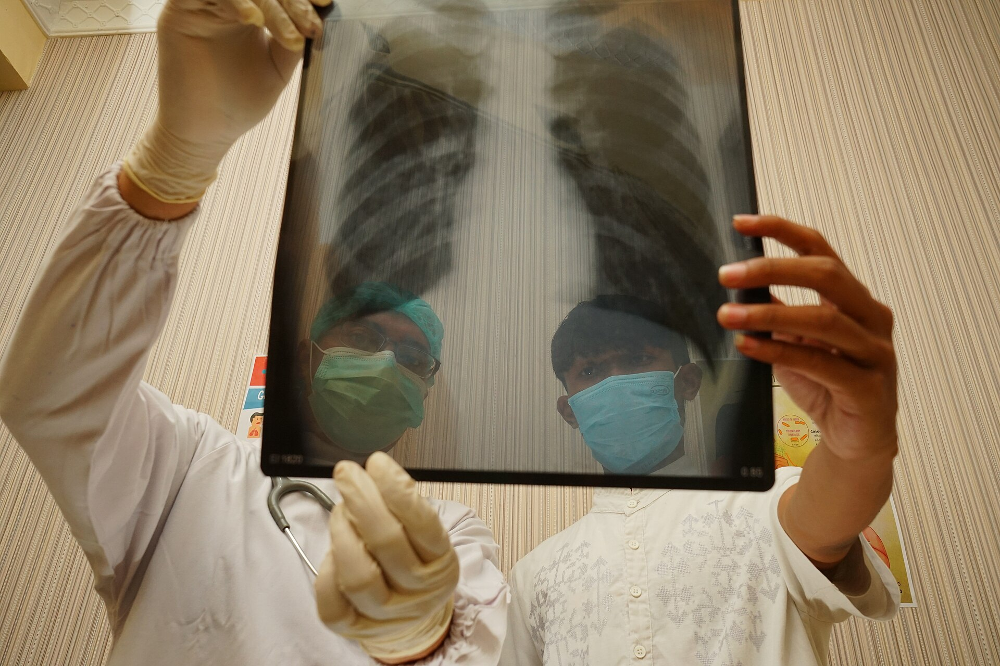
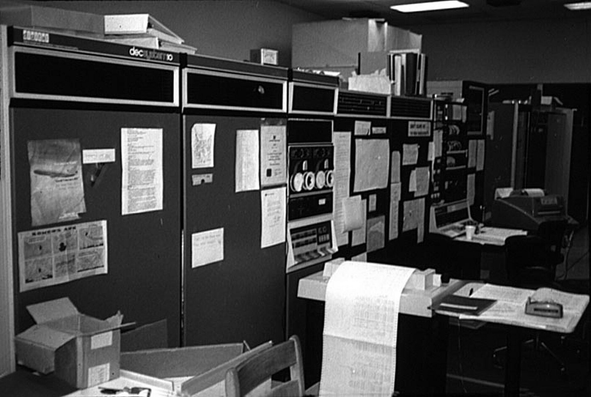
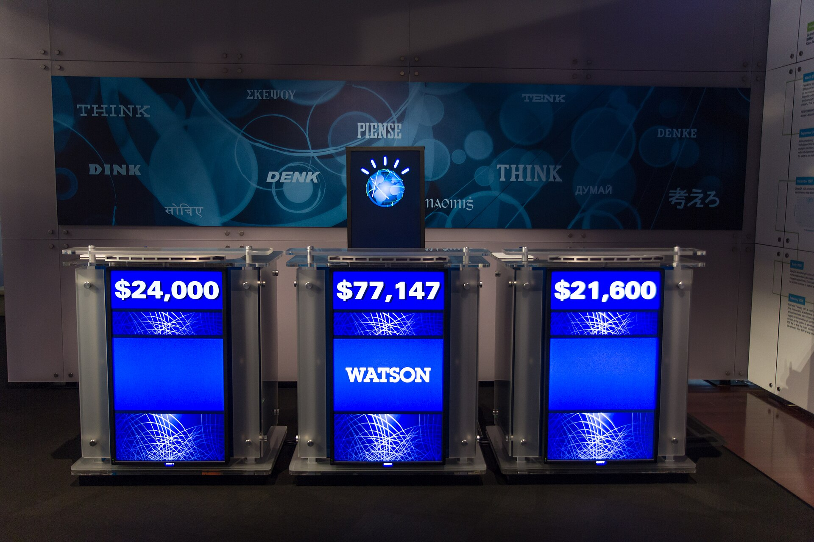
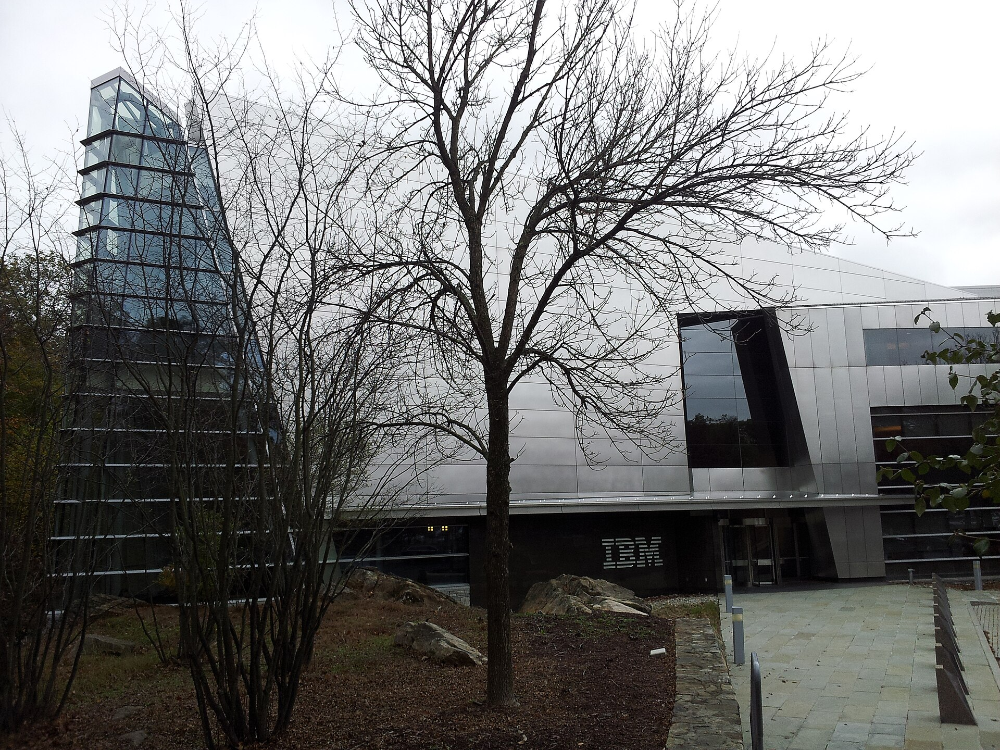
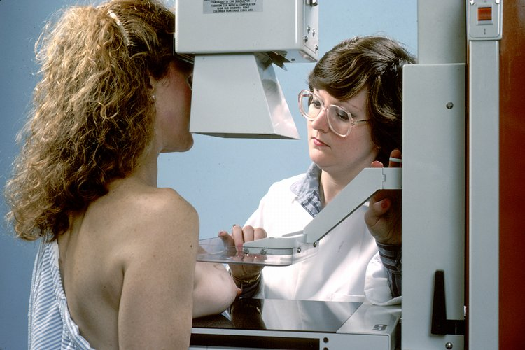
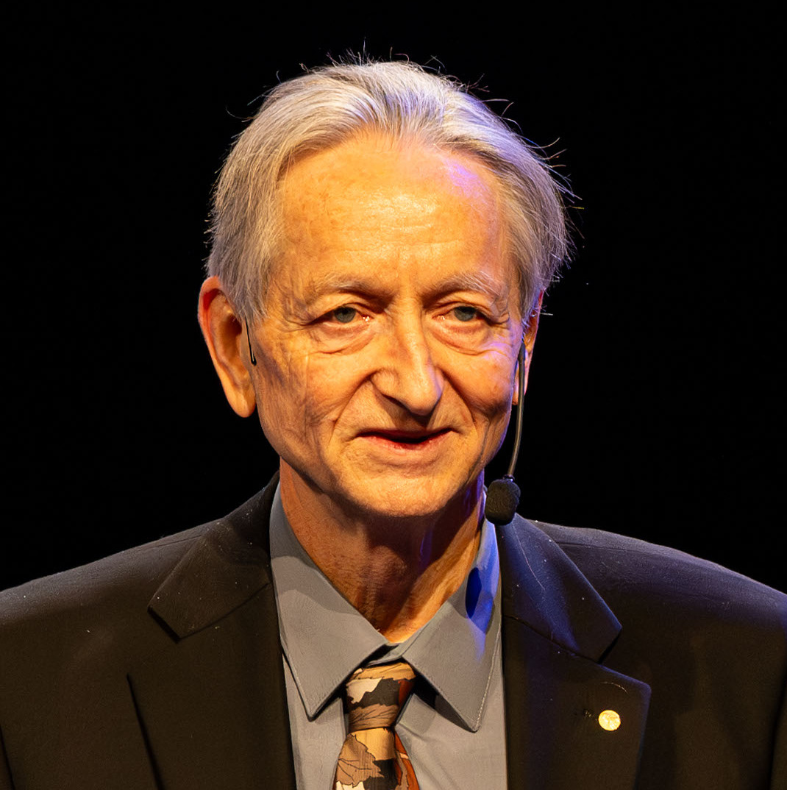

Partner, Not Replacement
Artificial Intelligence in Modern Healthcare

Photo: M Joko Apriyo Putro, CC BY 4.0, Wikimedia CommonsSovanndaratip Chan · Professor Sharon Hill
IDS 2891 · Research Artifact: Final Project
Why this matters
of surveyed US physicians use AI at work in 2026.
More than double the share in 2023, when the AMA first asked.
The question is no longer whether AI is in the exam room. It is who stays in charge.
Source: AMA 2026 Physician Survey on Augmented Intelligence (nearly 1,700 doctors)
Research question
To what extent can AI replace clinicians in diagnostic radiology and clinical decision-making, and does a hybrid clinician-AI model improve outcomes while addressing algorithmic bias, data privacy, and workforce shortage?
THESIS
Partner, not replacement: a clinician working with AI, under clear rules, can do better than standard care in some settings.
How I studied it
History
Why early systems like MYCIN and IBM Watson fell short
Evidence
What happens when clinicians and AI work together
Risks
Bias, patient privacy, and who is accountable
Rules
AMA and WHO guidance on using AI safely
I compared studies, trials, and policy documents. I checked key claims against their original sources and reviewed my plan with my librarian.
Lens and scope
My lens
Critical and evidence-based. I weigh benefits against risks and ask who is accountable when AI is wrong.
My scope
Diagnostic radiology and clinical decision-making, from the 1970s to today. Mostly US data, plus the MASAI trial from Sweden.
Drug discovery, surgical robots, and detailed laws outside the US.
Connections across fields
| Medicine and radiology | AI-supported mammography reading cut radiologists' reading workload by 44%. |
| Data and computer science | An algorithm that used cost as a stand-in for illness underestimated Black patients' needs. |
| Law and policy | AMA Policy H-480.939 says developers of autonomous clinical AI should accept liability for failures. |
| Ethics | WHO's first principle for health AI: protect human autonomy. |
| Public health | Radiologist supply is projected to grow 25.7–40.3% by 2055, but researchers say the gap with demand will persist without more residency positions. |
AI almost died in medicine

Photo: Rodney Brooks, GFDL 1.3MYCIN
A Stanford program suggested antibiotics using hand-written rules. It never became part of everyday care.

Photo: Atomic Taco, CC BY-SA 2.0Watson hype
IBM promised Watson would help fight cancer. One hospital reportedly spent about $62 million on a project that was shelved.

Photo: Treesmittenex, CC BY-SA 4.0The fall
IBM sold off its Watson Health business.
AI nearly died because it promised too much. That is why this project says: partner, not replacement.
Sources: The Register; Fierce Healthcare
Do doctors use AI? Not all of them
of surveyed US doctors use AI at work.
do not. Use is common, but not universal.
AMA view
“AI assists. The doctor decides.”
The AMA calls it augmented intelligence.
Sources: AMA 2026 survey; AMA Policy H-480.939
How accurate is it? AI can really help
MASAI trial
women had breast cancer screening supported by AI.
fewer interval cancers (cancers that appear between screenings).
less reading workload for radiologists. They still read the scans.

Photo: National Cancer Institute, public domainSource: MASAI trial, The Lancet (2026)
But accuracy depends on the data
Obermeyer et al., 2019
of Black patients were flagged for extra care by a hospital algorithm.
If the bias were fixed
would have been flagged.
AI can help. AI can be biased. We need both facts.
Source: Obermeyer et al., Science (2019)
Patient privacy
Training data
AI learns from patient records, some of the most personal data that exist.
Leaks and sales
If data is leaked or sold, people can be identified, and that harm cannot be undone.
Our rule
Be open with patients about how their data is used.
Source: WHO (2021), Ethics and Governance of Artificial Intelligence for Health
Can AI be tricked?
First message
jailbreak success in one tested model. (A jailbreak tricks an AI into breaking its own safety rules.)
By the fourth message
in the same model.
One model, not every AI. But a tricked medical AI could give unsafe advice, so a clinician must stay in the loop.
Source: arXiv 2606.02630 (2026 preprint, not peer reviewed; one model)
Will AI replace radiologists?

Hinton, 2016
Photo: Arthur Petron, CC BY-SA 4.0“People should stop training radiologists now.”
He said AI would outperform radiologists within five years.
Nine years later
growth in Mayo Clinic's radiology staff since 2016, to more than 400 radiologists.
Hinton today
Wrong on timing, not direction. He said he spoke too broadly and meant image analysis only.
Source: Lohr, The New York Times (May 14, 2025)
What the numbers say about jobs
MASAI
less reading work for radiologists. They still read the scans.
projected growth in radiologists treating Medicare patients by 2055, up from 37,482 in 2023.
Less work per scan does not mean fewer doctors. Without more residency positions, the gap between supply and demand will persist.
Sources: MASAI trial, The Lancet (2026); Christensen et al., Journal of the American College of Radiology (2025)
How to use AI correctly: four rules
AI proposes. The clinician decides.
Check the data for bias.
Be open with patients.
Make someone accountable. If AI makes a mistake, a person must answer for it.
We never rely on AI 100 percent.
Conclusion
Partner, Not Replacement.
AI helps doctors most when the doctor stays in charge.
Final reflection
- The goal is not to choose between humans and machines. It is to design rules so they work together safely.
- Strong claims need strong sources, so I narrowed “hybrid is always better” to “better in some settings.”
- Early AI nearly died because it promised too much. Hype is a risk too.
Sources
- AMA, 2026 Physician Survey on Augmented Intelligence.
- AMA, Augmented intelligence in medicine, and Policy H-480.939.
- WHO (2021), Ethics and Governance of Artificial Intelligence for Health.
- Obermeyer et al. (2019), Dissecting racial bias in an algorithm used to manage the health of populations, Science 366(6464), 447–453.
- MASAI trial, The Lancet (2026), DOI 10.1016/S0140-6736(25)02464-X.
- The Register, report on IBM Watson's cancer project cost.
- Fierce Healthcare, report on the sale of IBM Watson Health.
- arXiv 2606.02630 (2026 preprint).
- Lohr, S. (2025, May 14), The New York Times.
- Christensen et al. (2025), J Am Coll Radiol 22(2), 161–169, DOI 10.1016/j.jacr.2024.10.019.